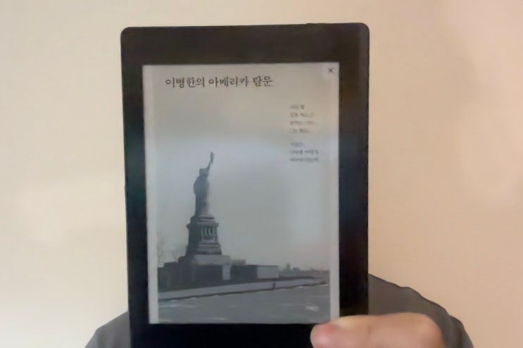

주변에서 추천을 하여서 한번 읽어 본 이명한 교수의 책입니다.
이분 배경이 참 특이한데요, 역사학을 전공했는데 아래와 같이 인공지능 이야기도합니다.
GPU 26만 장 아시아와 나눈다면? 미·중 전쟁 속 'AI 슈퍼파워' 되는 길찾기 트럼프 vs. 시진핑. 역사의 뒤안길로 사라지는 줄 알았는데 2024년 미국 대선에서 화려하게 부활한 트럼프와 연임 제한 헌법 규정까지 없애고 3연임 중인 시진핑. 절대 강자...
www.pressian.com
뭔가 희안한 것을 많이 하셔서 그런지 이 분에 대해서는 교수, 역사학자, 유사 역사학자, 인문학자, 인문 사회학자 등 여러 가지 라벨링이 붙습니다만 (특히 정치색 이야기는 다 빼고 말하면) 저는 이 분을 "이야기 꾼" 이라고 정하겠습니다.
이병한의 아메리카 탐문 (이하 "아탐문")은 아메리카를 움직이는 실질적인 지도자라고 주장하는 '피터 틸 (네 그 제로투원 피터틸 맞습니다)' 과 화성 갈끄야! 를 외치는 '일론머스크', 첫 여친이 한국이었다는 '알렉스 카프'아니 이게 팔란티어 CEO 보다 왜 먼저 나오는데, 그리고 아조씨가 좋아하는 젊은 부통령 JD 벤스 네 사람의 이야기를 써내려간 르뽀 ? 소설?
또는 판타지? 입니다.
I love it 책은 교묘하게 사실과 상상이 놀라운 필력으로 접합되어 있습니다. 그러기에 읽는데 정말 재미있습니다. 술술 넘어갑니다.
진실도 상상도 작가의 막강한 필력앞에서 대동단결, 작가가 만드는 좋게 말하면 작가의 통찰력, 나쁘게 말하면 작가의 망상을 향해 끊임 없이 이야기를 풀어나갑니다.
제가 이 분을 이야기꾼이라고 한 이유가 바로 이것입니다.
듣는이로 하여금 일단 재미있게 하는 것. 댄 브라운이 그랬고 시오노 나나미가 그랬던 이 재능이 이 작가분의 책에서도 보입니다. 그렇기 때문에 사실과 상상을 구분하지 못하는 분들을 양성하기에 딱 좋습니다. 댄 브라운이 그랬고 시오노 나나 미 분이 그랬죠.
이야기 꾼이 그렇듯이, 사람들의 머릿속에 재미있고 선동적이기 까지 한 오래된 이야기를 잘 만들어 냅니다만, 그것이 사실인지 여부는 쪼금은 살짝 뒤로 미루어 상상의 영역으로 체워냅니다. 이 부분을 미리 인지하고 읽으신다면 이 책도 나름 미국 신정부의 뒤에 자리잡고 있는 기술 출신 관료들의 이야기를 이해할 수 있는 괜찮은 책이라고 할 수 있겠습니다.
이 작가분이 미래에 통찰력으로 유명한 역사학자가 될것인지, 사람들을 선동하는 교주가 될 것인지 되게 궁금하네요. 본인의 재능이 좋은 방면에서 잘 피어났으면 좋겠습니다.
중국 관련 책도 쓰셨던데 한 번 빌릴 수 있으면 빌려서 재미로 읽어볼려구요.
끝.